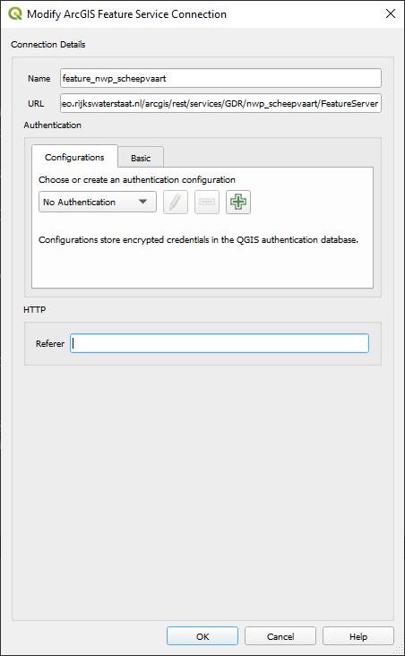
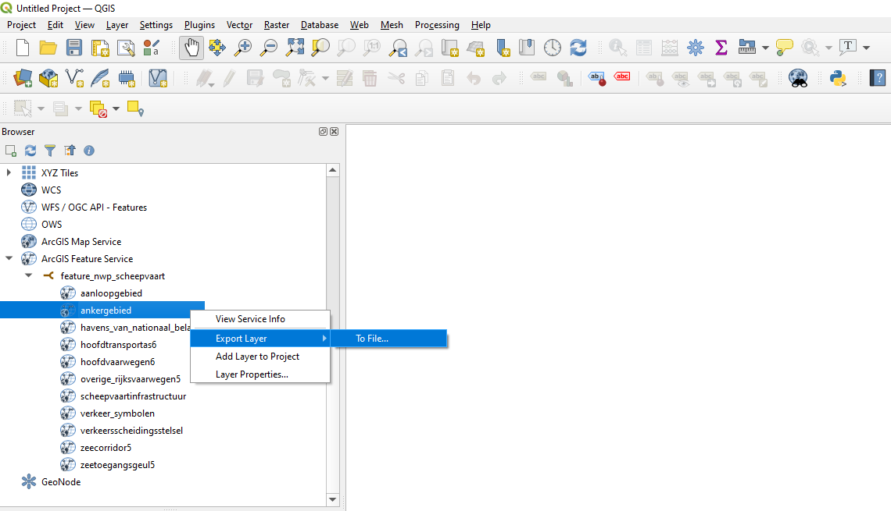
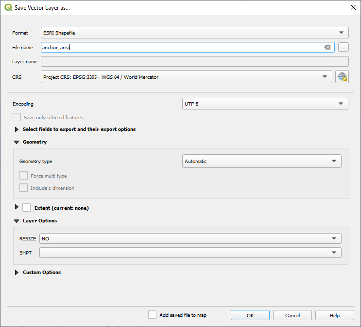
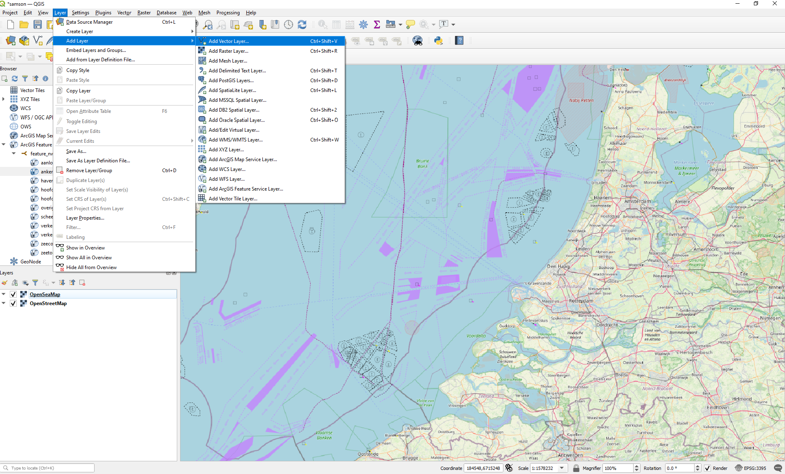
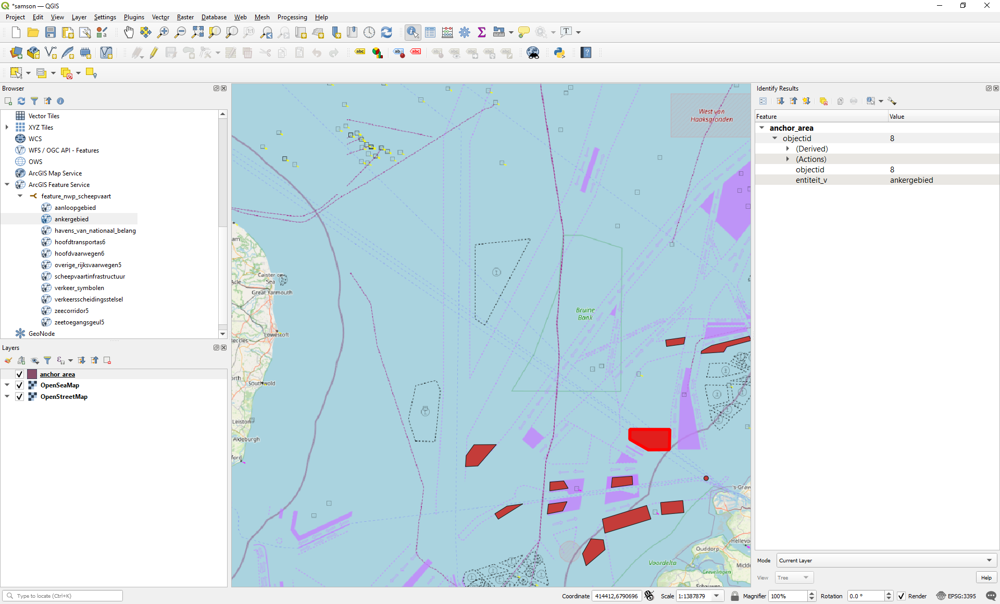

Anchor area geometry#
This tutorial explains how to obtain anchor area data from an ArcGIS server. This dataset serves as the foundation for the safety assessment in SAMSON.
After establishing a connection to the Rijkswaterstaat server, we display the anchor area in a QGIS layer. Subsequently, the content of this layer is
exported as a shapefile. The end result can also be downloaded: QGIS project file
Connect to RWS ArcGIS server#
Generally, there are two types of ArcGIS services: map services and feature services. Map services are ideal for fast, static map displays, while feature services are better suited for interactive applications that require direct data manipulation. In this tutorial, we will acquire the anchor area shapefile for our SAMSON computation by connecting to an ArcGIS Feature Service.
Here are the basic steps to add a connection to a ArcGIS server:
Go to the
Browserpanel on the left side of the QGIS window. If you don’t see theBrowserpanel, you can enable it by going toView > Panels > Browser.Create a new connection: Right-click on
ArcGIS Feature Servicein theBrowserpanel. SelectNew Connection.Configure the connection:
In the
Namefield, enter a name for your connection (e.g., feature_nwp_scheepvaart).In the
URLfield, enter the following URL: https://geo.rijkswaterstaat.nl/arcgis/rest/services/GDR/nwp_scheepvaart/FeatureServerNo authentication is needed to make the connection with this server.
Click
OKto save the connection.

Fig. 9 New QGIS ArcGIS connection#
Export Shapefile#
Now we export a feature layer from our ArcGIS service.
Here are the basic steps to create this export:
Unfold to the created ArcGIS connection and inspect the multiple available feature layers. We are interested in layer
ankergebied.Right-click on
Export Layer > To File, to configure the shapefile you are going to export.

Fig. 10 Export a layer from the ArcGIS service#
Configure the export:
Format is
ESRI Shapefile.Fill in a
filename and specifiy the export directory (browse) next to it.Add the
CRSspecification. Here we specifyEPSG-3395 - WGS 84 / World Mercator.

Fig. 11 Configure the export of a shapefile#
Note
Shapefiles (Wiki) are a popular geospatial vector data format used in Geographic Information System (GIS) software. Developed by Esri, they are designed to store the geometric location and attribute information of geographic features such as points, lines, and polygons. A shapefile is actually a collection of files with the same base name but different extensions, typically including:
.shp: Contains the geometry data (the shapes themselves).
.shx: An index file that allows for quick access to the geometry data.
.dbf: Stores attribute data in a tabular format, similar to a spreadsheet.
Shapefiles are widely used because they are simple and compatible with many GIS applications, although they do have some limitations, such as a lack of support for topological information
Import Shapefile#
Next, we’ll import the exported Shapefile into our QGIS project from the previous tutorial. This project includes the OpenStreetMap and OpenSeaMap layers.
Here are the basic steps to execute this import:
Click
Layer > Add layer > Add vector Layer

Fig. 12 Add vector layer to import anchor Shapefile#
Specify the name and location of the exported Shapefile in the
Vector Dataset(s)field followed byAddandClose.Your imported anchor areas are now displayed as closed polygons. Each polygon has an unique identifier, which can be retrieved with the
Identify Featuresbutton or the shortcutcrtl+shift+i. We have now reached the stage where we can modify our geometrical dataset for computational purposes.

Fig. 13 Feature info#
Tip
Alternatively, you can drag and drop your the ankergebied into your QGIS project.